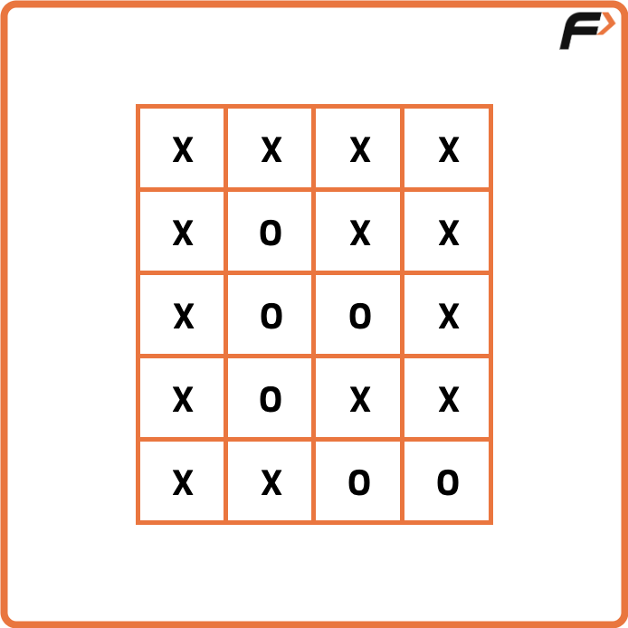
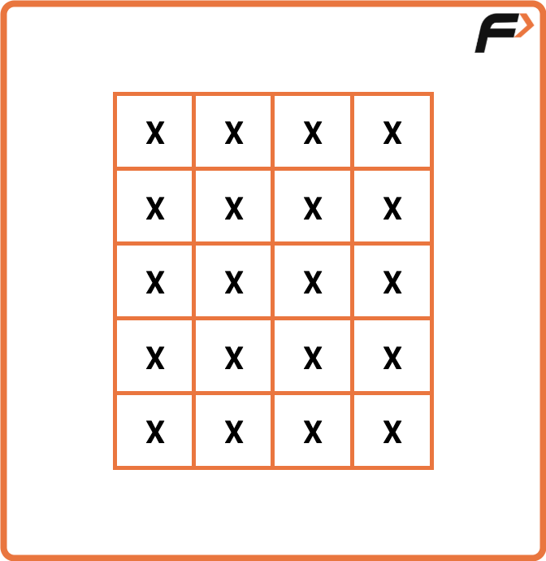

Archived from https://takeuforward.org/graph/surrounded-regions-replace-os-with-xs/
Problem Statement: Given a matrix mat of size N x M where every element is either ‘O’ or ‘X’.
Replace all ‘O’ with ‘X’ that is surrounded by ‘X’. An ‘O’ (or a set of ‘O’) is considered to be surrounded by ‘X’
if there are ‘X’ at locations just below, just above just left, and just right of it.
Examples
Example 1:
Input: n = 5, m = 4

Output:
Example 2:
Input: n = 5, m = 4
Output:

Disclaimer: Here is the practice link to
help you assess your knowledge better. It's highly recommend trying to
solve it before looking at the solution.
Approach
Algorithm
The problem is about converting all 'O' regions that are completely
surrounded by 'X' into 'X'.
However, any 'O' that is connected to the boundary cannot be converted,
since it's not fully surrounded.
So the key idea is:
Mark all 'O's that are connected to the boundary as safe.
At the end, flip all other 'O's (unvisited ones) into 'X'.
Approach
Use DFS (or BFS) starting from boundary cells.
Whenever we see an 'O' on the boundary, perform DFS/BFS to mark all connected 'O's as
visited (safe).
After this traversal, all boundary-connected 'O's remain as they are, because they
cannot be surrounded.
Traverse the entire matrix:
If an 'O' is visited, leave it as 'O'.
If an 'O' is not visited, convert it into 'X'.
Code
#include <bits/stdc++.h>
using namespace std;
class Solution {
private:
// DFS to mark boundary-connected 'O's as visited
void dfs(int row, int col, vector<vector<int>>& vis, vector<vector<char>>& mat, int delrow[], int delcol[]) {
// mark current cell visited
vis[row][col] = 1;
// cache dimensions
int n = mat.size(), m = mat[0].size();
// try 4 directions
for (int k = 0; k < 4; k++) {
// compute next cell
int nrow = row + delrow[k], ncol = col + delcol[k];
// check bounds and unvisited 'O'
if (nrow >= 0 && nrow < n && ncol >= 0 && ncol < m && !vis[nrow][ncol] && mat[nrow][ncol] == 'O') {
// continue DFS
dfs(nrow, ncol, vis, mat, delrow, delcol);
}
}
}
public:
// Flip all 'O' not connected to boundary to 'X'
vector<vector<char>> fill(int n, int m, vector<vector<char>> mat) {
// handle empty matrix
if (n == 0 || m == 0) return mat;
// direction arrays for 4-neighbors
int delrow[4] = {-1, 0, 1, 0};
int delcol[4] = {0, 1, 0, -1};
// visited matrix
vector<vector<int>> vis(n, vector<int>(m, 0));
// traverse first and last row
for (int j = 0; j < m; j++) {
// start DFS from unvisited boundary 'O' (top row)
if (!vis[0][j] && mat[0][j] == 'O') dfs(0, j, vis, mat, delrow, delcol);
// start DFS from unvisited boundary 'O' (bottom row)
if (!vis[n - 1][j] && mat[n - 1][j] == 'O') dfs(n - 1, j, vis, mat, delrow, delcol);
}
// traverse first and last column
for (int i = 0; i < n; i++) {
// start DFS from unvisited boundary 'O' (left col)
if (!vis[i][0] && mat[i][0] == 'O') dfs(i, 0, vis, mat, delrow, delcol);
// start DFS from unvisited boundary 'O' (right col)
if (!vis[i][m - 1] && mat[i][m - 1] == 'O') dfs(i, m - 1, vis, mat, delrow, delcol);
}
// flip all unvisited 'O' to 'X'
for (int i = 0; i < n; i++) {
for (int j = 0; j < m; j++) {
// convert enclosed 'O' to 'X'
if (!vis[i][j] && mat[i][j] == 'O') mat[i][j] = 'X';
}
}
// return updated board
return mat;
}
};
int main() {
// sample board
vector<vector<char>> mat{
{'X','X','X','X'},
{'X','O','X','X'},
{'X','O','O','X'},
{'X','O','X','X'},
{'X','X','O','O'}
};
// create solver
Solution ob;
// compute result
vector<vector<char>> ans = ob.fill((int)mat.size(), (int)mat[0].size(), mat);
// print board
for (int i = 0; i < (int)ans.size(); i++) {
for (int j = 0; j < (int)ans[0].size(); j++) {
cout << ans[i][j] << " ";
}
cout << "\n";
}
return 0;
}
import java.util.*;
class Solution {
// DFS to mark boundary-connected 'O's as visited
private void dfs(int r, int c, int[][] vis, char[][] mat, int[] dr, int[] dc) {
// mark current cell visited
vis[r][c] = 1;
// cache dimensions
int n = mat.length, m = mat[0].length;
// try 4 directions
for (int k = 0; k < 4; k++) {
// compute next cell
int nr = r + dr[k], nc = c + dc[k];
// check bounds and unvisited 'O'
if (nr >= 0 && nr < n && nc >= 0 && nc < m && vis[nr][nc] == 0 && mat[nr][nc] == 'O') {
// continue DFS
dfs(nr, nc, vis, mat, dr, dc);
}
}
}
// Flip all 'O' not connected to boundary to 'X'
public char[][] fill(int n, int m, char[][] mat) {
// handle empty matrix
if (n == 0 || m == 0) return mat;
// direction arrays
int[] dr = {-1, 0, 1, 0};
int[] dc = {0, 1, 0, -1};
// visited matrix
int[][] vis = new int[n][m];
// traverse first and last row
for (int j = 0; j < m; j++) {
// DFS from top boundary 'O'
if (vis[0][j] == 0 && mat[0][j] == 'O') dfs(0, j, vis, mat, dr, dc);
// DFS from bottom boundary 'O'
if (vis[n - 1][j] == 0 && mat[n - 1][j] == 'O') dfs(n - 1, j, vis, mat, dr, dc);
}
// traverse first and last column
for (int i = 0; i < n; i++) {
// DFS from left boundary 'O'
if (vis[i][0] == 0 && mat[i][0] == 'O') dfs(i, 0, vis, mat, dr, dc);
// DFS from right boundary 'O'
if (vis[i][m - 1] == 0 && mat[i][m - 1] == 'O') dfs(i, m - 1, vis, mat, dr, dc);
}
// flip all unvisited 'O' to 'X'
for (int i = 0; i < n; i++) {
for (int j = 0; j < m; j++) {
// convert enclosed 'O' to 'X'
if (vis[i][j] == 0 && mat[i][j] == 'O') mat[i][j] = 'X';
}
}
// return updated board
return mat;
}
}
public class Main {
public static void main(String[] args) {
// sample board
char[][] mat = {
{'X','X','X','X'},
{'X','O','X','X'},
{'X','O','O','X'},
{'X','O','X','X'},
{'X','X','O','O'}
};
// create solver
Solution ob = new Solution();
// compute result
char[][] ans = ob.fill(mat.length, mat[0].length, mat);
// print board
for (int i = 0; i < ans.length; i++) {
for (int j = 0; j < ans[0].length; j++) {
System.out.print(ans[i][j] + " ");
}
System.out.println();
}
}
}
class Solution:
# DFS to mark boundary-connected 'O's as visited
def dfs(self, r, c, vis, mat, dr, dc):
# mark current cell visited
vis[r][c] = 1
# cache dimensions
n, m = len(mat), len(mat[0])
# try 4 directions
for k in range(4):
# compute next cell
nr, nc = r + dr[k], c + dc[k]
# check bounds and unvisited 'O'
if 0 <= nr < n and 0 <= nc < m and vis[nr][nc] == 0 and mat[nr][nc] == 'O':
# continue DFS
self.dfs(nr, nc, vis, mat, dr, dc)
# Flip all 'O' not connected to boundary to 'X'
def fill(self, n, m, mat):
# handle empty matrix
if n == 0 or m == 0:
return mat
# direction arrays
dr, dc = [-1, 0, 1, 0], [0, 1, 0, -1]
# visited matrix
vis = [[0] * m for _ in range(n)]
# traverse first and last row
for j in range(m):
# DFS from top boundary 'O'
if vis[0][j] == 0 and mat[0][j] == 'O':
self.dfs(0, j, vis, mat, dr, dc)
# DFS from bottom boundary 'O'
if vis[n - 1][j] == 0 and mat[n - 1][j] == 'O':
self.dfs(n - 1, j, vis, mat, dr, dc)
# traverse first and last column
for i in range(n):
# DFS from left boundary 'O'
if vis[i][0] == 0 and mat[i][0] == 'O':
self.dfs(i, 0, vis, mat, dr, dc)
# DFS from right boundary 'O'
if vis[i][m - 1] == 0 and mat[i][m - 1] == 'O':
self.dfs(i, m - 1, vis, mat, dr, dc)
# flip all unvisited 'O' to 'X'
for i in range(n):
for j in range(m):
# convert enclosed 'O' to 'X'
if vis[i][j] == 0 and mat[i][j] == 'O':
mat[i][j] = 'X'
# return updated board
return mat
if __name__ == "__main__":
# sample board
mat = [
['X','X','X','X'],
['X','O','X','X'],
['X','O','O','X'],
['X','O','X','X'],
['X','X','O','O']
]
# create solver
ob = Solution()
# compute result
ans = ob.fill(len(mat), len(mat[0]), mat)
# print board
for row in ans:
print(*row)
class Solution {
// DFS to mark boundary-connected 'O's as visited
dfs(r, c, vis, mat, dr, dc) {
// mark current cell visited
vis[r][c] = 1;
// cache dimensions
const n = mat.length, m = mat[0].length;
// try 4 directions
for (let k = 0; k < 4; k++) {
// compute next cell
const nr = r + dr[k], nc = c + dc[k];
// check bounds and unvisited 'O'
if (nr >= 0 && nr < n && nc >= 0 && nc < m && vis[nr][nc] === 0 && mat[nr][nc] === 'O') {
// continue DFS
this.dfs(nr, nc, vis, mat, dr, dc);
}
}
}
// Flip all 'O' not connected to boundary to 'X'
fill(n, m, mat) {
// handle empty matrix
if (n === 0 || m === 0) return mat;
// direction arrays
const dr = [-1, 0, 1, 0], dc = [0, 1, 0, -1];
// visited matrix
const vis = Array.from({ length: n }, () => Array(m).fill(0));
// traverse first and last row
for (let j = 0; j < m; j++) {
// DFS from top boundary 'O'
if (vis[0][j] === 0 && mat[0][j] === 'O') this.dfs(0, j, vis, mat, dr, dc);
// DFS from bottom boundary 'O'
if (vis[n - 1][j] === 0 && mat[n - 1][j] === 'O') this.dfs(n - 1, j, vis, mat, dr, dc);
}
// traverse first and last column
for (let i = 0; i < n; i++) {
// DFS from left boundary 'O'
if (vis[i][0] === 0 && mat[i][0] === 'O') this.dfs(i, 0, vis, mat, dr, dc);
// DFS from right boundary 'O'
if (vis[i][m - 1] === 0 && mat[i][m - 1] === 'O') this.dfs(i, m - 1, vis, mat, dr, dc);
}
// flip all unvisited 'O' to 'X'
for (let i = 0; i < n; i++) {
for (let j = 0; j < m; j++) {
// convert enclosed 'O' to 'X'
if (vis[i][j] === 0 && mat[i][j] === 'O') mat[i][j] = 'X';
}
}
// return updated board
return mat;
}
}
// Driver code
(function () {
// sample board
const mat = [
['X','X','X','X'],
['X','O','X','X'],
['X','O','O','X'],
['X','O','X','X'],
['X','X','O','O']
];
// create solver
const ob = new Solution();
// compute result
const ans = ob.fill(mat.length, mat[0].length, mat);
// print board
for (const row of ans) {
console.log(row.join(' '));
}
})();
Complexity Analysis
Time Complexity: O(N × M), since each cell is visited at most once during DFS
and once during the final traversal.
Space Complexity: O(N × M), due to the visited matrix and the recursion stack in
the worst case.